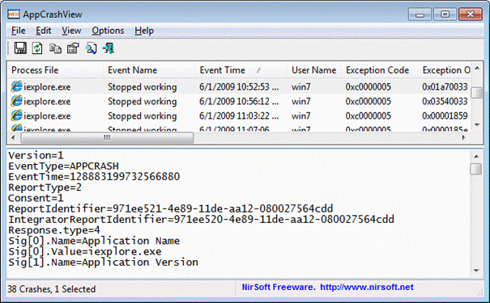

Gedachter Verlauf¶
Die Inhalte des Faches AWP werden in der 11. Klasse zweiteilig vermittelt. Neben dem Thema ERM/SQL/Datenbanken mit insgesamt 7 Stunden pro Blockwoche wird das aktive Programmieren einer datenbankgestützten Applikation umgesetzt.
Es wird im Laufe des Schuljahres mindestens 1 Test geschrieben.
Die weiteren Ausführungen beziehen sich auf den zweiten Teil des Unterrichts.
Inhalte des Unterrichts¶
Das Programmierthema dient zur Vermittlung von Inhalten der Softwareentwicklung und bezieht sich auf folgende Themen.
- Programmieren einer datenbankgestützten C#-Applikation
- Versionsverwaltung
- Unit-Testing
- Metriken
- Einsatz von CI-Software
Die Programmierung kann/sollte mit Hilfe verschiedener Programmiersprachen erfolgen, wobei darauf zu achten ist, dass grundlegende Kenntnisse der Programmiersprache innerhalb des Teams vorhanden sein sollten.
Vorgeschichte¶
Bis Windows XP und Server2003 war Dr. Watson das Programm zur Crash-Analyse. Ab Windows Vista ist nun Windows Error Reporting (WER) für das Hardware und Software Problemreporting, an die Stelle von Dr. Watson getreten.
Hier muss man aber beachten, das Programme die mit dem .NET Framework entwickelt worden sind meist keine Error-Reports erzeugen!
Windows Error Reporting (WER) ist für 2 Aufgaben zuständig. Die Fehlerberichtsfunktion ermöglicht es Anwendungsfehler, Kernel-Fehler, nicht mehr reagierende Anwendungen und andere anwendungsspezifische Problemberichte über einen Service an Microsoft zu senden.
Werden die Problemberichte an Microsoft gesendet, dann wird in der Datenbank bei Microsoft nach Lösungen für das aufgetretene Problem gesucht und es werden Lösungen vorschlagen, wenn welche gefunden wurden. Das Senden dieser Berichte kann seitens des Systemadministrators verhindert werden.
Version=1
EventType=APPCRASH
EventTime=130467955473684710
ReportType=2
Consent=1
UploadTime=130467955480403784
ReportIdentifier=4a222852-efdd-11e3-8281-78dd08b4da52
IntegratorReportIdentifier=4a222851-efdd-11e3-8281-78dd08b4da52
WOW64=1
NsAppName=daVinci.exe
Response.BucketId=4f5befa6735ab77e0d40a74ab08834b6
Response.BucketTable=1
Response.LegacyBucketId=73313869235
Response.type=4
Sig[0].Name=Anwendungsname
Sig[0].Value=daVinci.exe
Sig[1].Name=Anwendungsversion
Sig[1].Value=6.0.2.79
....
....
Die Probleme werden anhand einer so genannten Bucket-ID Identifiziert. Die Bucket-ID (oder auch fault Bucket ID) wird aus der Version des Programms, das abgestürzt ist und anderen technischen Informationen erzeugt. Dies schafft eine einzigartige Signatur für den Absturz. Die Bucket-ID erscheint in den Details des Windows-Crash-Dialogs und den Ereignisprotokollen. Diese Bucket-ID ist wichtig für Microsoft um das Problem eindeutig erkennen zu können.
Error Report Dateien *.wer¶
Windows Error Reporting (WER) sammelt auch die Reportdateien mit der Endung “.wer”, an verschiedenen Orten auf dem Computer.
# Per user archived Windows Error Reports
$env:USERPROFILE\AppData\Local\Microsoft\Windows\WER\ReportArchive
# Per user queued Windows Error Reports
$env:USERPROFILE\AppData\Local\Microsoft\Windows\WER\ReportQueue
# System archived Windows Error Reports
$env:ALLUSERSPROFILE\Microsoft\Windows\WER\ReportArchive
# System queued Windows Error Reports
$env:ALLUSERSPROFILE\Microsoft\Windows\WER\ReportQueue
Möchte man alle WER Reports erfassen, so muss man in jedem User Profil auf dem Rechner nach den *.wer Dateien suchen und alle genannten Ordner “abklappern”.
# liste mit allen Windows Error Reporting User-Pfaden dieses Rechner erstellen
$WerReportPfade = Get-ChildItem $env:SystemDrive\users | Where-Object
{$_.PSIsContainer} | ForEach-Object { $Path = $_.Fullname
# Testen ob der richtige Unter-Pfad im User Ordner vorhanden ist
If(Test-Path (Join-Path -Path $Path -ChildPath 'AppData\Local\Microsoft\Windows\WER\ReportArchive') )
{
# Pfad ausgeben
(Join-Path -Path $Path -ChildPath 'AppData\Local\Microsoft\Windows\WER\ReportArchive')
}
# Testen ob der richtige Unter-Pfad im User Ordner vorhanden ist
If(Test-Path (Join-Path -Path $Path -ChildPath
'AppData\Local\Microsoft\Windows\WER\ReportQueue') )
{
# Pfad ausgeben
(Join-Path -Path $Path -ChildPath 'AppData\Local\Microsoft\Windows\WER\ReportQueue')
}
}
# Das System hat noch 2 Windows Error Reporting andere Pfade wo .wer Dateien liegen
# diese werden zur liste zugefügt
.....
Konfiguration von Windows Error Reporting (WER)¶
Windows Error Reporting (WER) kann auf verschiedene Weisen konfiguriert werden. So kann man z.B. Abschalten das Problemberichte an Microsoft deaktivieren oder die Orte ändern, an denen die *.wer Dateien abgelegt werden.
Einen guten Artikel hat Herr Sommergut von WindowsPro verfasst: Problembericht senden: Windows Error Reporting konfigurieren oder deaktivieren http://www.windowspro.de/wolfgang-sommergut/problembericht-senden-windows-fehlerberichterstattung-konfigurieren-deaktivieren
Herr Sommergut beschreibt auch das man die WER Reportdateien über Gruppenrichtlinien so konfigurieren kann, das Fehlerberichte an einen internen Server anstatt an Microsoft gesendet werden. Damit wird eine Funktion des Corporate Windows Error Reporting (CER) genutzt. Man kann damit ein NTFS-Share oder ein SSL-Verbindung nutzen, um die Reports an den eigenen Server zu senden.
Weitere Dokumentation, wie man das Windows Error Reporting (WER) mit Group Policies oder Registry Schlüsseln einstellen kann, findet man in der Microsoft Dokumentation im Developer Center:
Windows Error Reporting (WER) http://msdn.microsoft.com/en-us/library/windows/desktop/bb513641%28v=vs.85%29.aspx
Den Speicherort von den *.wer Dateien stellt man z.B. mit den folgenden Schlüsseln in der Windows Registry um:
HKEY_LOCAL_MACHINE\SOFTWARE\Microsoft\Windows\Windows Error Reporting\LocalDumps\DumpFolder
HKEY_LOCAL_MACHINE\SOFTWARE\Microsoft\Windows\Windows Error Reporting\LocalDumps\DumpType
Windows Error Reporting (WER) Tools¶
Ein gutes Tool zum Verarbeiten von den Windows Error Reporting Dateien, hat Nir Sofer hergestellt. Dieses Tool nennt sich AppCrashView und kann auch mit der Windows PowerShell eingesetzt werden. Da es die *.wer Dateien in CSV oder XML umwandeln kann und von der Kommandozeile aus, gesteuert werden kann.
Windows PowerShell Error Reporting (WER) Cmdlets¶
In Windows 8 und Server 2012 R2 gibt es nun auch 3 sehr bescheidene Windows PowerShell Cmdlets um das Reporting an oder abzuschalten.
Windows Error Reporting (WER) Cmdlets in Windows PowerShell http://technet.microsoft.com/en-us/library/jj590827.aspx
- Disable-WindowsErrorReporting schaltet das Error Reporting an Microsoft ab.
- Enable-WindowsErrorReporting schaltet das Error Reporting an Microsoft wieder ein.
- Get-WindowsErrorReporting zeigt an ob das Errorreporting ein oder ausgeschaltet ist.
Logfiles anstatt *.wer Dateien nutzen¶
Die *.wer Dateien zu sammeln und mit der Windows PowerShell zu analysieren, ist aber eigentlich der falsche Ansatz. Immer wenn ein Programm crasht, dann wird das in den Ereignisprotokollen(Eventlog) von Windows verzeichnet.
Windows PowerShell kann hervorragend mit den Windows Ereignisprotokollen (Eventlog) von Windows umgehen, da es für diese Aufgabe spezielle Cmdlets hat.
Ein abgestürzte Applikation, die einen Eintrag im Applikations-Ereignisprotokoll mit der ID 1000 und der Report-Quelle “Application Error” hinterlässt, könnte mit folgenden Befehl abgefragt werden.
Get-EventLog -LogName Application -InstanceId 1000 -Source 'Application Error'
Das Reporting selbst hinterlässt auch Einträge im Applikations-Ereignisprotokoll mit der ID 1001 und der Report-Quelle ” Windows Error Reporting”.
Get-EventLog -LogName Application -InstanceId 1001 -Source 'Windows Error Reporting'
Einen schönen Artikel darüber hat Aaron Paul Rykhus geschrieben: Finding useful crash data and Windows Error Reporting (WER) http://blogs.technet.com/b/arykhus/archive/2008/12/11/finding-useful-crash-data-and-windows-error-reporting-wer.aspx